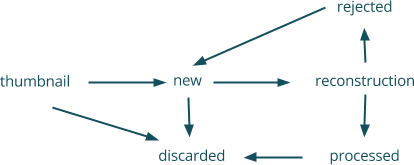

3.3.2. Picture Manager¶
This section describes several things that, once combined, allow the application to manage pictures. Models, entities and manager will be described. We’ll also write a bit about the storage system.
3.3.2.1. Picture model¶
In order to manipulate pictures in the Picture Manager, we’ve defined a specific model in Python. Besides, this model is also used by the Workspace Manager and the Map Viewer as they share common needs that may be represented into one single model. Concretly our Python implementation is classic Python class that inherit from the QAbstractListModel of Qt (or more exactly, the PyQt5 representation). Then, the model is implementing required methods to access data, set data and easily manipulate rows. We’ve strictly respected Qt documentation and headers to write functions content; thus, Qt’s doc could be used to describe each implemented function. There is also a bunch of fonctionalities needed for our typical application purpose such as specific accessors or hydratation method.
Also, the picture is implementing a METAClass Savable that allow it to be stored and loaded by the Workspace Manager into and from the workspace. This is possible with only four methods calls on an instance of the model, which are : serialize, unserialize, save and load. Their meanings are pretty straightforward.
3.3.2.2. Picture model’s items : Picture¶
Each model is a kind of container that store certain kind of item. In our case, those items are pictures, or at least, our idea of a picture. In Matrix, a picture represent several things : a path to an image file, a name, a status, a latitude, a longitude, a date of creation, a color and an icon. All those attributes are called roles in the Qt world. Some of them could be directly obtained from another (color and icon from status for instance) and thus, they are just programming sugars. However, most of the role are straightforward, except maybe the status role which we’ll describe below.
{kind=link}
Thereby, a picture can have a status. The actual goal of this status is either to know which pictures to select for a reconstruction, or either to inform users about how the application is considering the picture. A picture can start in only two states : THUMBNAIL or NEW; THUMBNAIL after an import from a camera, and new after either an import from a computer, or a real import from thumbnail into HQ pictures. After a reconstruction, pictures can be in the state PROCESSED or REJECTED depending of the result of the openMVG computes. Only NEW and PROCESSED pictures are taken for a reconstruction. During the reconstruction, they are in the state RECONSTRUCTION. Finally, pictures can be manually discarded to go in the state DISCARDED. It allows user to discard thumbnail he doesn’t want to import, or to discard photos that should not be used for the reconstruction, even if they are ready. Also, GPS coordinates of a picture are obtained from the EXIF data of a picture, using a python implementation of the tool exiftool.
3.3.2.3. Picture manager¶
It is really common that the model and the model manager are gathered into one single component. The model is a specific component that holds data and gives simple accessors on those data. A manager, is typically another component that supplies high-level methods to manipulate and retrieve data from the model. When models are quite simple, they may be fusionned with the manager. As a result, it is almost our case.
In the application, we’ve define a manager as an upper layer, upon the model described previously. What we called manager is a QSortFilterProxyModel, and this is the component supplied to the different QML views. This manager allow us to create proxy model, i.e. models that are subsets from our real model. The main purpose is to have an easy control on sorting and filtering element inside the model. As we defined several states for each pictures, they could be filtered using this state. Thus, instead of instanciating a new model each time a filter is required, we use a proxy model that re-use the real model and simplify a part of the work. Therefore, some accessors are directly defined on the manager to allow QML’s component to retrieve some information directly from the model, without emitting a slot.
Also, we’ve experimented some issues using the proxy model. Indeed, re-instantiating a proxy model to replace an existing one in the QML’s side causes a core dumped. The reason is still unknown. In order to change the source model, you would rather use appropriate method of the proxy model.